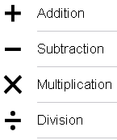
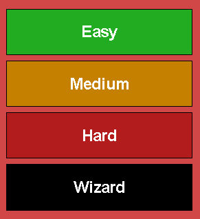
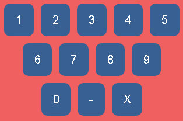
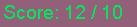
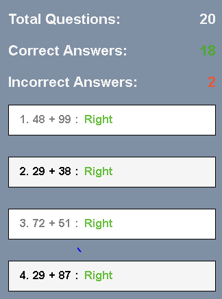
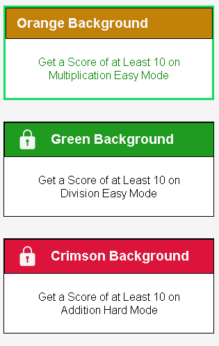

Overview
Fast Math is designed to challenge avid mathematicians of all levels, whether you're a beginner or a literal god of arithmetic.  The premise of the game is simple; choose 1 of the 4 elementary math operations and test your skills by solving as many randomly generated problems as you can before time runs out.
Difficulty
Each game type has 4 different levels of difficulty: easy, intermediate, hard, and wizard. The difficulty determines the amount of time and the range of the  randomly generated numbers. The amount of time for each difficulty is as follows: Easy -- 60 seconds, Intermediate -- 90 seconds, Hard -- 120 seconds, Wizard -- 180 seconds. The range of the numbers is different for each operator. For example, the range of numbers generated in addition easy mode is between 1 and 100, while the range of numbers generated in multiplication easy mode is 1 to 25.
Answer Input
To input the answer that you want to submit, you must use the number-based keyboard provided below the randomly generated numbers and the input box. Besides being able to input  numbers 0 through 9, the keyboard provides a negative symbol (only used in subtraction mode), marked by -, and a back symbol that deletes the most recent numeric input, marked by X.
Next to the input box is a symbol that looks like a refresh icon. Pressing that deletes the entire input in case you enter several wrong numbers. In hard and wizard mode, this is much more efficient than spamming the back button.
Score and Results
For each mode, the goal threshold is 10 correct responses. The outcome of the results page is determined by whether or not you get 10 correct responses before time runs out. In the case that you do,  your score will continue to go past 10 until time runs out. The results page will show you each problem that you answered and whether or not you got it right or wrong, as well as the total questions attempted.  Each operation-difficulty pair tracks the highest score that you get in that category. **It's important to note that your high scores will not be tracked unless you are registered and logged in.**
The top 100 scores for each operation-difficulty pair can be found on the leaderboards. If you don't place on the boards, you can go to your user profile and check your statistics, which includes your high scores and the total number of questions you've answered.
Rewards
There are unlockable rewards that you can unlock to customize your  profile with, including background colors and medals for achievements. The rewards gradually increase in difficulty, making certain rewards easy to obtain to others being absurdly difficult.
That's all you need to know to play. Now get to solving!